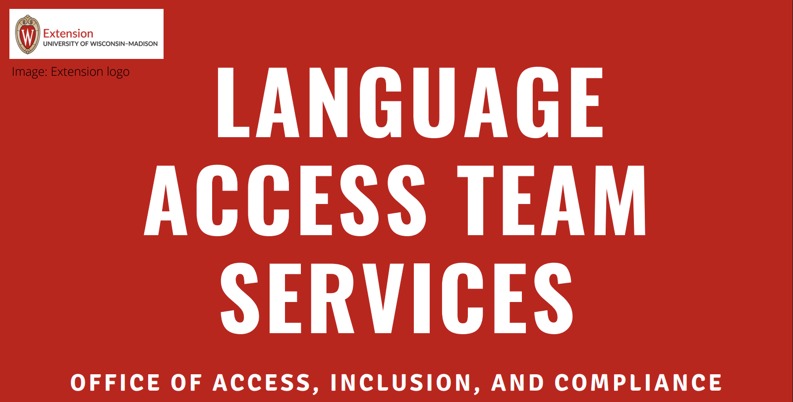

Internship - IT & Communications Intern
Language Access Department, Office of Access, Inclusion & Compliance, WI, USA
12/2025 – Present
I'm very honored to work at UW-Madison Extension, a warm and generous community that opened its wings to me. I have felt genuinely welcomed, valued, and supported here!
- My current main responsibility focuses on redesigning our department’s main SharePoint Database, and creating an automated workflow across multiple different platforms.
- Outside of my main tasks and meetings, I also review all web posts on the department’s main website to ensure content relevancy and web design accessibility.
- I improve workflow smoothness by designing and evaluating multiple forms/questionnaires.
- I also assist colleagues with Mandarin translation/interpretation evaluation for the department’s language access work.